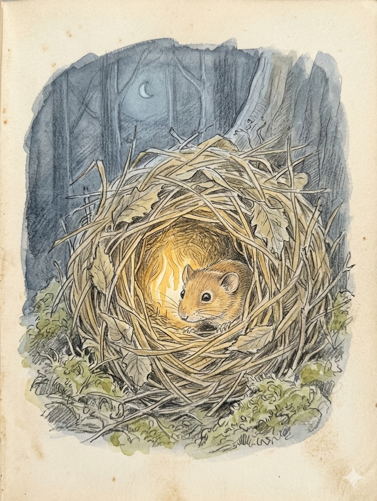
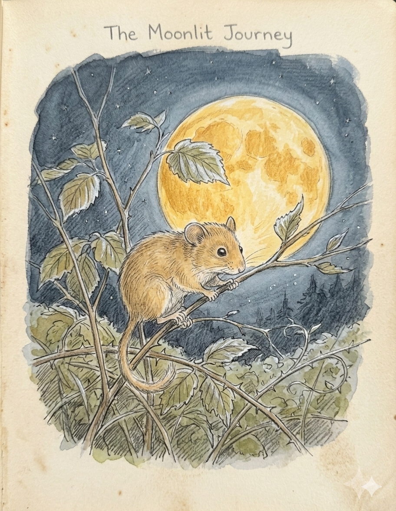
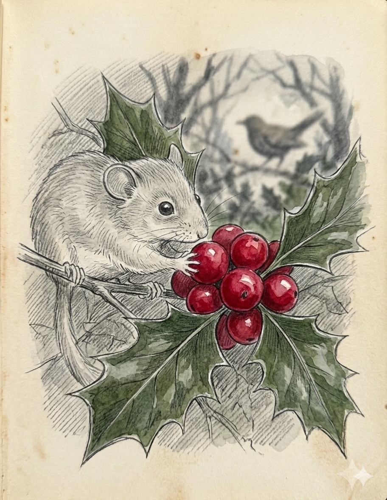
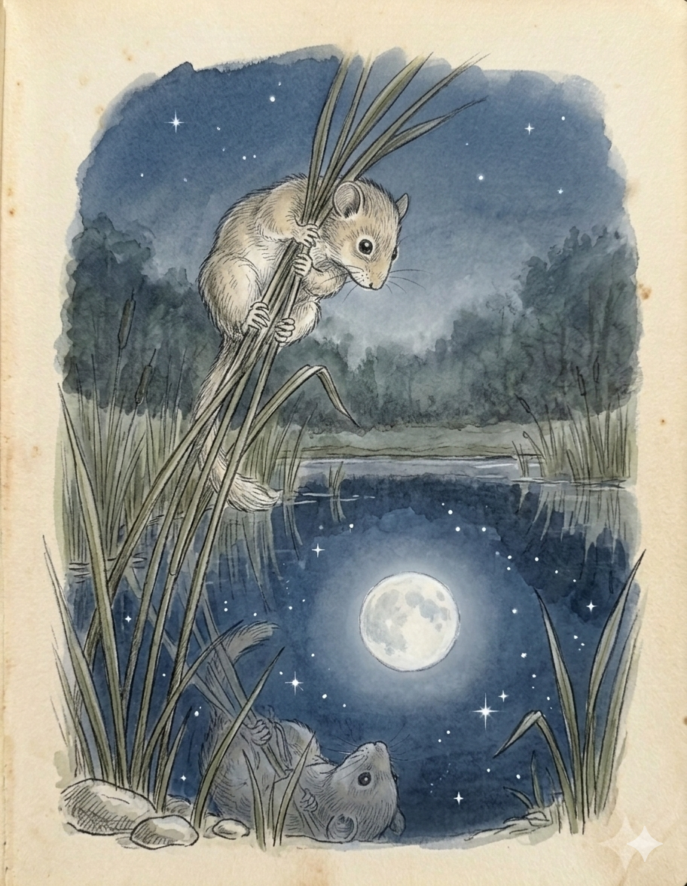
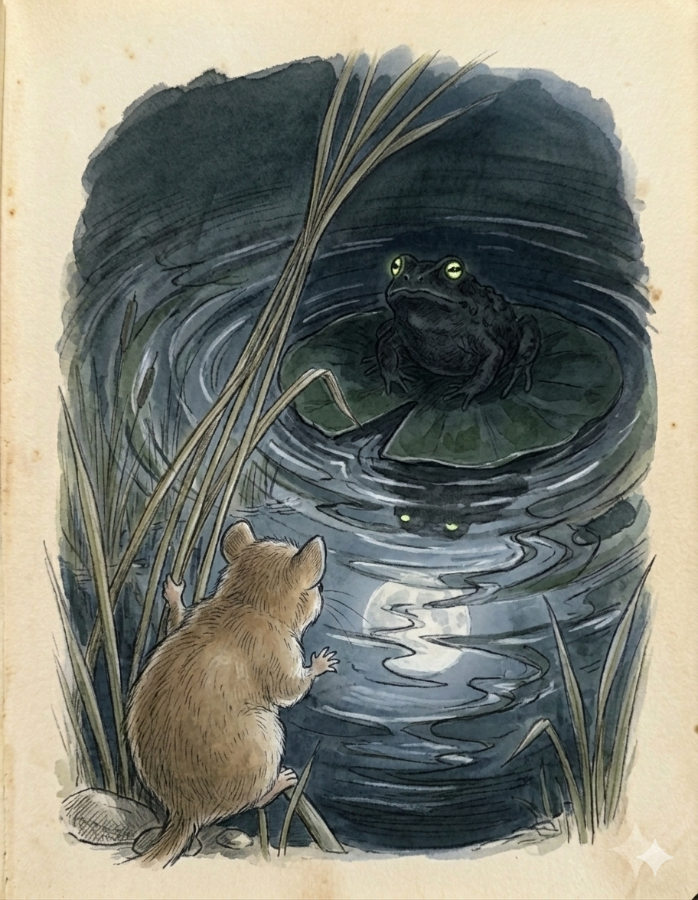
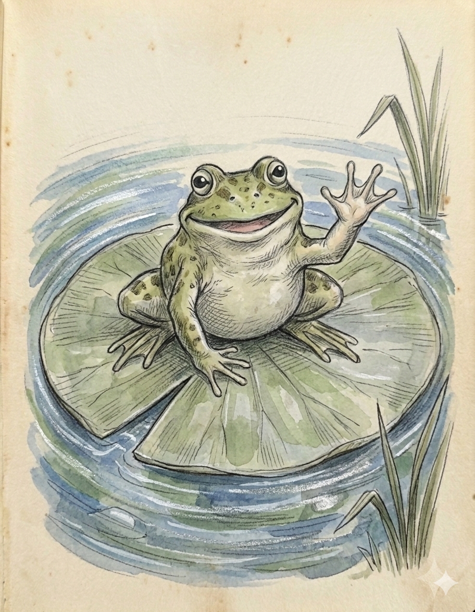
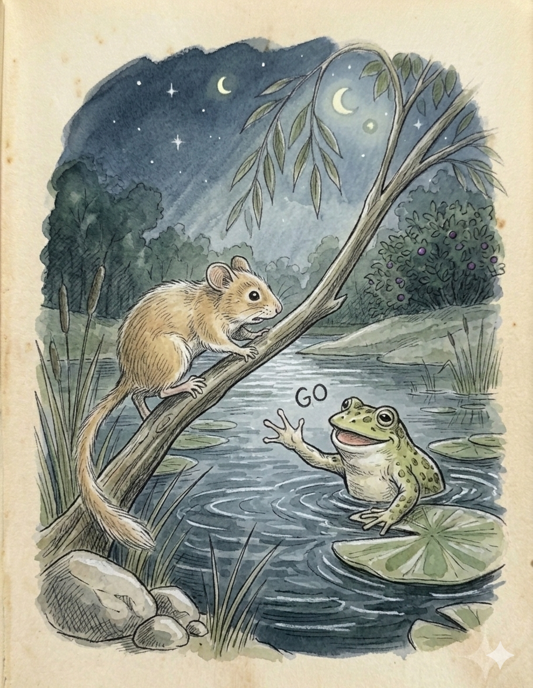
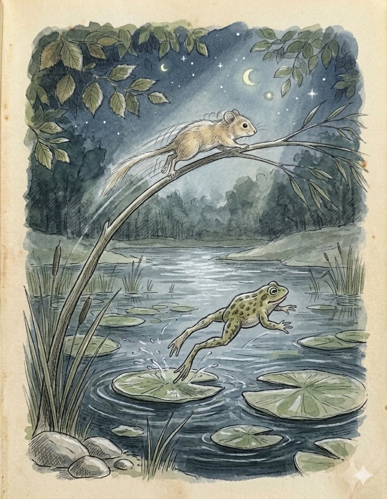
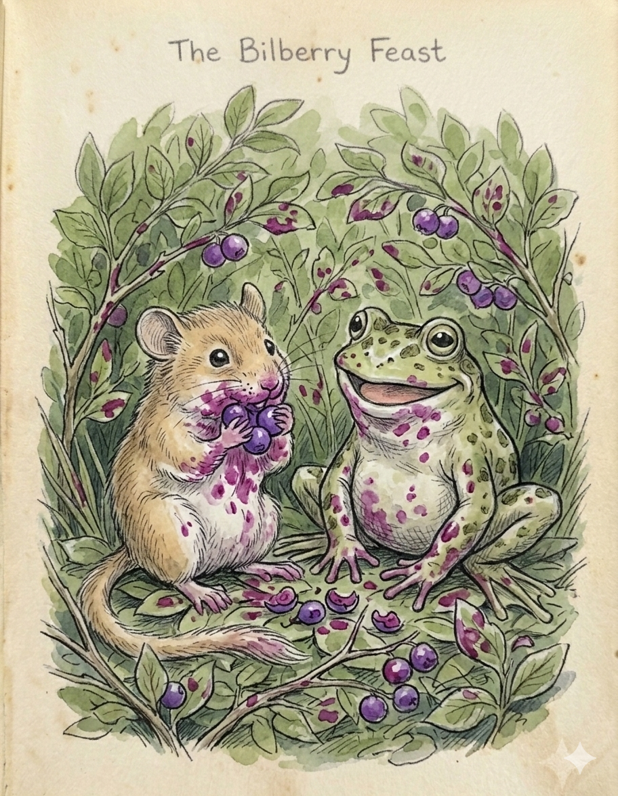

Additional illustrations and colouration by Google Gemini

One moonlit night Pebbles woke up early. His five big brothers and his five little sisters were still snoring peacefully. (Quite loudly in fact!).
Mum was already busy tidying the nest, so he said “Good evening Mama, I think I’ll go out on my own to-night, Dad said I was big enough now is that ok?”
“Of course”, said Mum, “You are a very sensible doormouse, off you go, but bring something tasty back for supper.”
The moon was big and round like a golden plate in the sky and Pebbles could see thousands of stars twinkling down at him. He felt very grown up and important.
He made his way along the brambles and the hazel bushes ~ doormice don’t very often travel at ground level.


He took a jump from the hazel into the holly bush and noticed that there were plenty of berries, he was glad because the blackbird had told him that the berries were good to eat in the winter when they turned red.
Pebbles had never seen them red because of course he always hibernated in the winter.
He wriggled through the holly and over some more brambles then onto very tall grasses that Dad said were reeds.
He soon reached the edge of the pond.
Pebbles loved it here but he knew he had to be very careful. Pebbles held on tight to the reeds and looked across the pond.
Dad said it was like a mirror that humans use to look at themselves.


Pebbles thought it very odd that they looked at themselves, but he did like to see the moon reflected in the water and the trees and leaves and . . . . but what was that?
Two huge eyes were looking up at Pebbles from a large lily pad ~ lily pads are large water lily leaves that float on top of the water.
“Hi there” said a deep gruff voice, “fancy a game?”
“Oh, probably”, said Pebbles rather nervously, “but who are you?”
“I’m Tad the frog, and I’m feeling a little lonely, how about a race?”
“A race, oh but I can’t run on the ground and certainly not in the water” said Pebbles.
“That’s ok”, said Tad, “I’ll hop across the pond on the lily pads and you can go over the bridge."


"There's a big bush of bilberries on the other side I'll meet you there"
Pebbles couldn’t see a bridge, but then in the light of the moon he saw a branch of a willow tree spanning the pond, this will be easy, he thought, he didn't know what a bilberry bush was but he didn't like to admit that.
“Ok”, said Pebbles, “I’ll have a go”.
“Ready, steady, GO “ shouted Tad.
Off they went, Tad had very strong back legs and leapt easily from pad to pad on the pond, but some were quite a long way apart so he had to do a detour.
Pebbles set off at a pace of lightening ~ doormice might sleep a lot but when the move they go very fast.
Over the branch he went, between the soft thin leaves, through the shadows of the big trees and out at the other side... plop!


He fell off into a tickly green bush covered in juicy purple fruit.
Tad jumped in at the same moment + they squashed some of the sticky fruit and it trickled down their bodies making both of them a very funny colour.
They laughed and laughed. When they had finished Pebbles licked his mouth ~ “Yummy” he said “these taste good!”
When he was full he picked some more for supper.
“Race you back” yelled Tad.
“I won” said Tad ~ “I’ll win next time” said Pebbles with a grin.
“Cheerio” and off he went with his bilberries.